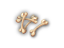
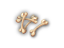
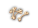
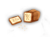
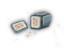
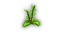

| Name | Weight | Satiation | Special | Remarks | Damage | Tile |
|---|---|---|---|---|---|---|
| alraunia antidote | 2s | 20 | 1 | eaten, fights poisoning (best when blessed) | HM(+0,1d1) | |
| apple | 2s | 100 | 2 | HM(+0,1d1) | ||
| bit of plain candy | 2s | 20 | 3 | abuses To when eaten; can be given to children or Blup | HM(+0,1d1) |
|
| bit of gnomish candy | 2s | 1000 | 3 | really abuses To when eaten | HM(+0,1d1) | |
| bone | 4s | 10 | 10 | heals skeletons (1d6) | H(-2,1d4) M(-3,1d3) | 
|
| burb root | 2s | 20 | 1 | eaten, causes acid damage (worst when cursed, does not damage acid resistant PCs) | HM(+0,1d1) |
|
| cooked lizard | 3s | 500 | 11 | HM(+0,1d1) | ||
| cooked roach | 3s | 20 | 11 | HM(+0,1d1) |
| |
| corpse | [1] | 500 | 2,13 | can be cooked | H(-6,1d4) M(-6,1d2) | |
| curaria mancox herb | 2s | 20 | 1 | eaten, fights sickness (best when blessed) | HM(+0,1d1) | |
| demon daisy | 2s | 20 | 1 | eaten, causes poisoning (worst when cursed, does not damage poison resistant PCs) | HM(+0,1d1) | |
| devil's rose | 2s | 20 | 1 | eaten, causes sickness (worst when cursed) | HM(+0,1d1) |
|
| dwarven sausage | 20s | 500 | 10 | H(+0,1d2) M(+0,1d3) |
| |
| fat worm | 3s | 20 | 11 | HM(+0,1d1) |
| |
| fortune cookie | 3s | 100 | contains a rumor, see 0.15.8.1 | HM(+0,1d1) | ||
| fried bat | 3s | 100 | 11 | HM(+0,1d1) | ||
| frog legs | 2s | 500 | HM(+0,1d1) |
| ||
| herb seed | 2s | 20 | 4 | apply Gardening to grow into herbs | HM(+0,1d1) |
|
| hurthling cake | 30s | 100 | cursed ones stun non-trolls | H(+0,1d2) M(+0,1d3) |
| |
| iron ration | 100s | 500 | H(+0,1d2) M(+0,1d3) |
| ||
| large ration | 200s | 500 | H(+0,1d2) M(+0,1d3) |
| ||
| loaf of bread | 40s | 500 | H(+0,1d2) M(+0,1d3) |
| ||
| loaf of dwarvish bread | 60s | 500 | satiation points quadrupled for Dwarves | H(+0,1d2) M(+0,1d3) |  | |
| loaf of elven bread | 3s | 2000 | H(+0,1d1) M(+0,1d1) |
| ||
| loaf of hurthling bread | 30s | 500 | H(+0,1d2) M(+0,1d3) |
| ||
| loaf of spider bread | 3s | 20 | 5 | HM(+0,1d2) |  | |
| lump of beeswax | 5s | 20 | 12 | use to plug ears, remove with clean Ears command | HM(+0,1d1) | |
| lump of gelee royal | 3s | 2000 | 12 | use to remove scar OR eat for +1 Ap, cure sickness, cure poison | HM(+0,1d1) |
|
| melon | 20s | 500 | HM(+0,1d1) |
| ||
| morgia root | 2s | 20 | 1 | eaten, trains To then Wi up to about 25 | HM(+0,1d1) | |
| moss of mareilon | 2s | 20 | 1 | used, trains Dx (abuses if cursed) up to about 25 | HM(+0,1d1) |
|
| pepper petal | 2s | 20 | 1 | eaten, restores HP (6d10/3d8/3d4 B/U/C) | HM(+0,1d1) | |
| piece of dry meat | 15s | 500 | HM(+0,1d2) |
| ||
| piece of raw meat | 20s | 500 | 2,6,9 | can be cooked to produce a piece of fresh meat | HM(+0,1d2) |
|
| piece of fresh meat | 20s | 1000 | 9 | cooked version of raw meat | HM(+0,1d2) |
|
| piece of fish meat | 10s | 500 | 2,8,9,14 | can be cooked to produce a fried piece of fish meat | HM(+0,1d2) |
|
| fried piece of fish meat | 9.5s | 1000 | 7,8,9 | cooked version of fish meat | HM(+0,1d2) |
|
| plant seed | 2s | 20 | 4,14 | can be given to farmers for lawful boost | HM(+0,1d1) |
|
| rat tail | 3s | 20 | 11 | HM(+0,1d1) |
| |
| spenseweed | 2s | 20 | 1 | used, restores HP (5d4+20/3d6+3/1d6 B/U/C) | HM(+0,1d1) |  |
| stomacemptia | 2s | see 0.3.2 | 1 | eaten, reduces satiation (worst when cursed) | HM(+0,1d1) |
|
| stomafillia | 2s | 6250/2000/550 | 1 | eaten, increases satiation (best when blessed) | HM(+0,1d1) |
[1] 30s/60s/120s/240s depending on monster size.
All food and corpses are made of various materials, except for bone, which is considered wood. The satiation value is increased by 25% for blessed items and decreased by 50% for cursed items.
| Special | Meaning |
|---|---|
| 1 | herb; unidentified appear as strange herb; can be identified by picking with the Herbalism skill; more on herbs see 0.13.6 |
| 2 | susceptible to rotting |
| 3 | unidentified appear as bit of candy; can be identified by taste: plain = 'sweet', gnomish = 'annoyingly sweet'; children and Blup will only accept plain candy |
| 4 | unidentified appear as seed |
| 5 | more nutritious for Dark Elves: cursed = 2010, uncursed = 1020, blessed = 125; this unusual fact is in fact intentional |
| 6 | more nutritious for Orcs (2x), Trolls (3x), Barbarians (3x) and Beastfighters (3x); if a PC falls into more than one category, only the higher bonus applies – i.e. Orcish Beastfighters are 3x; Drakelings receive a different message than other races but get the usual 500 satiation points |
| 7 | fried fish meat indeed has a fractional weight – if a stack of fried fish meat contains an odd number of pieces, the weight of the stack is rounded up |
| 8 | tames black hurthlings |
| 9 | tames animals |
| 10 | tames dogs |
| 11 | ratling trader food |
| 12 | only generated in beehives |
| 13 | satiation is lost if the PC vomits |
| 14 | obtained via applying Survival skill in the wilderness |
See section 0.3.2 for satiation level details.
| Name | Effect | Tile |
|---|---|---|
| Common mushrooms | ||
| fly mushroom | causes sickness | 
|
| mushroom of energy | max HP +2/+1/-1 B/U/C [1] | |
| mushroom of immobility | causes paralysis | 
|
| mushroom of kaboom | max PP +2/+1/-1 B/U/C [1] | 
|
| mushroom of lost thoughts | acts as a scroll of amnesia | |
| mushroom of meditation | piety +1500/+200/-1000 B/U/C | |
| mushroom of shivering | PC drops wielded items unless blessed | 
|
| mushroom of the glow | Ap +2/+1/-1 B/U/C, temporary Ap boost [1] | 
|
| mushroom of the swirly mind | causes confusion | |
| Overlord mushrooms | ||
| muscle mushroom | St +2/+1/-1 B/U/C, temporary St boost [1] | 
|
| mushroom of ecstasy | large Sp boost,-Le,-Wi / small Sp boost,-Le,-Wi / Slowed,-Dx,-To B/U/C | 
|
| mushroom of hardiness | To +2/+1/-1 B/U/C, temporary To boost [1] | 
|
| mushroom of indomitability | Wi +2/+1/-1 B/U/C, temporary Wi boost [1] | 
|
| mushroom of purity | corruption around -1000/-200/+500 B/U/C | 
|
| mushroom of resilience | PV +2/+1/-1 B/U/C [1] | |
| mushroom of the inner light | teaches random skill AND spell/skill OR spell/-Le B/U/C | 
|
[1] The permanent stat increase doesn't always happen, and can be just +1 in the blessed case.
All mushrooms are only dropped by fungoids, are initially cursed, weigh 2s, provide 20 satiation, appear as "strange mushroom" when unidentified, deal (+0,1d1) in both melee and ranged, and cannot be wished for.